Shaders List (shaders.xr)
About
This section contains a list and description of the shaders that are available in the shaders.xr file. This file contains descriptions of shader settings.
List
Shaders for static objects
| Shader name | Description |
|---|---|
| zfill | |
| xwindow | Old unused glass shader |
| selflight | self-lighting material |
| glass | |
| friendly_indicator | |
| font | |
| default_pn_hm | |
| default_pn | |
| default_hm | |
| default | basic lightmap shader |
| clouds |
ufp Shaders
| Shader name | Description |
|---|---|
| ufp_blend |
Test Shaders
| Shader name and path | Description |
|---|---|
| test\aaaaaaaa__ | |
| test\aass |
Sky Shaders
| Shader name and path | Description |
|---|---|
| sky\background | |
| sky\clouds | |
| sky\clouds_old | |
| sky\skydome |
Particles Shaders
| Shader name and path | Description |
|---|---|
| particles\add | |
| particles\alpha_add | |
| particles\blend | |
| particles\dark | |
| particles\set | |
| particles\xadd | |
| particles\xblend | |
| particles\xdistort |
Shaders for dynamic objects
| Shader name and path | Description | Preview |
|---|---|---|
| models\antigas_glass | CubeMap reflection shader (variant 1) | |
| models\artefact | CubeMap reflection shader (variant 2) | 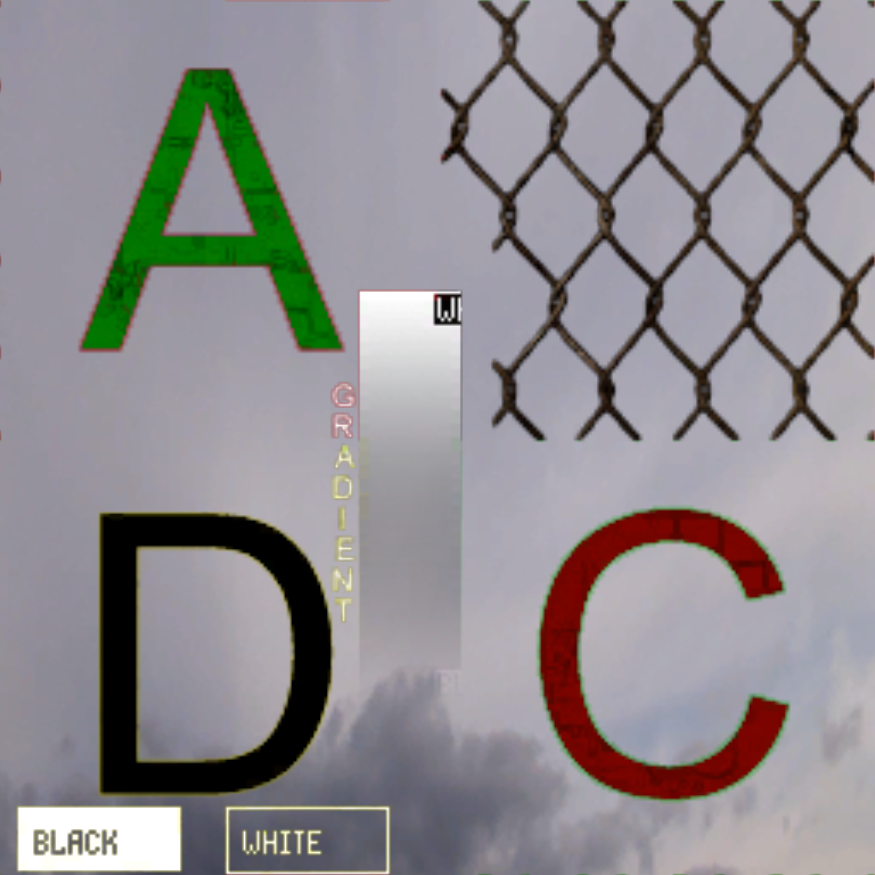 |
| models\artefact2 | CubeMap reflection shader (variant 3) | 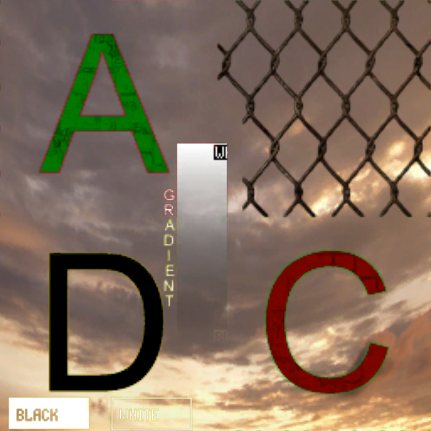 |
| models\artifact-anim-env | ||
| models\glass_stalker_refl | ||
| models\lfo_black_lens_weapons | ||
| models\lfo_black_soft_lens_weapons | ||
| models\lfo_glass_lens_weapons | ||
| models\lfo_light_dot_weapons | ||
| models\lightplanes | self-lighting material with translucent and falloff effect | |
| models\mirror | 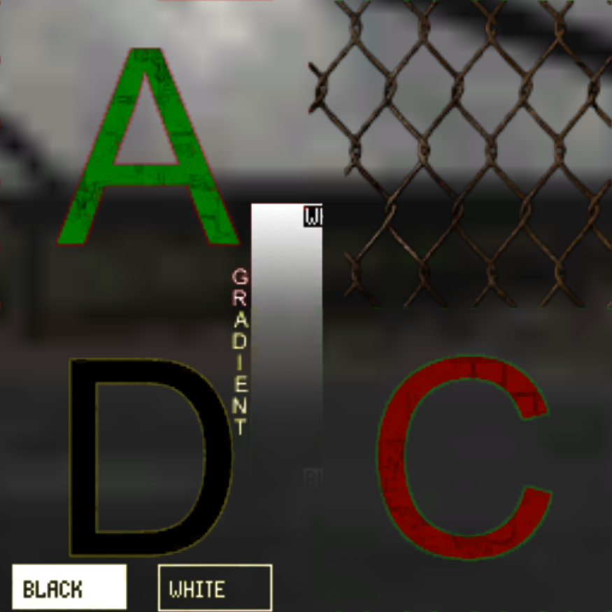 | |
| models\model | basic shader |  |
| models\model_aref | transparency. alpha test - trans (with gradients) | 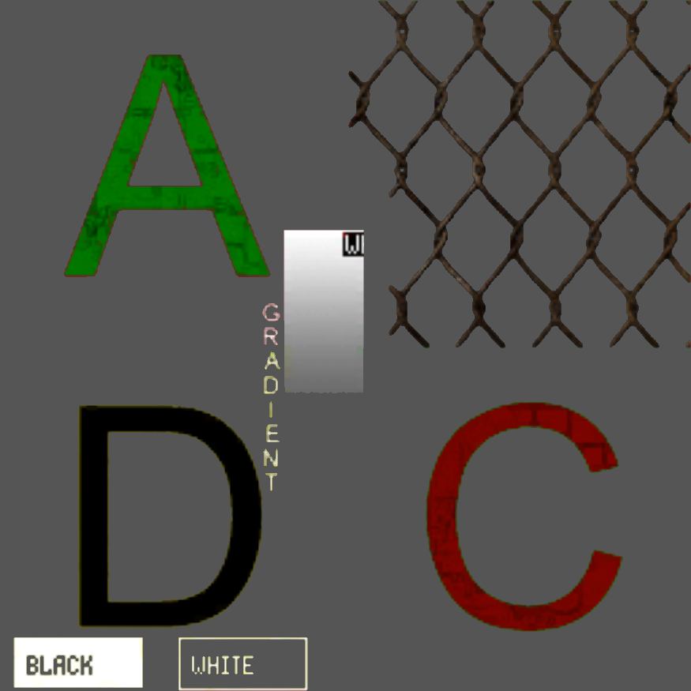 |
| models\model_fur | transparency. alpha test - aref (no gradients) |  |
| models\hm |  | |
| models\pn |  | |
| models\pn_hm | enable tesselation on models (DX11 only) |  |
| models\pautina | material with transparency and falloff effect | 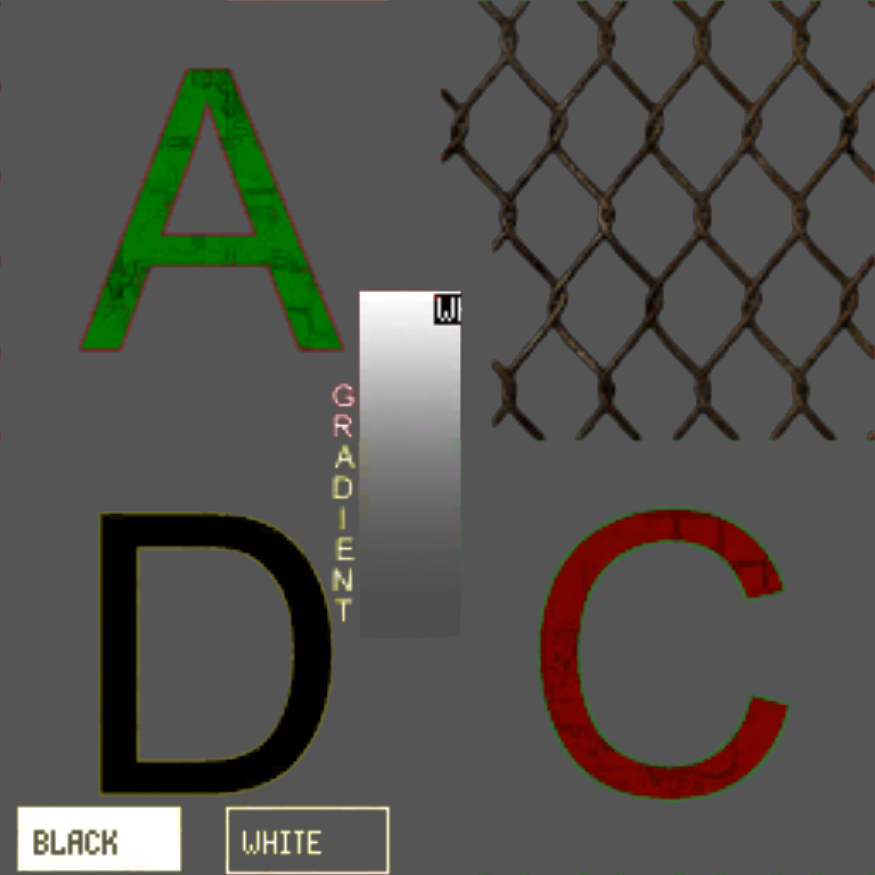 |
| models\selflight | basic self-lighting material |  |
| models\seftlight_det | uses an engine shader variable. For example, it is possible to make the detector screen turn off when the battery level is too low |  |
| models\selflightl | self-lighting material with lower intensity | 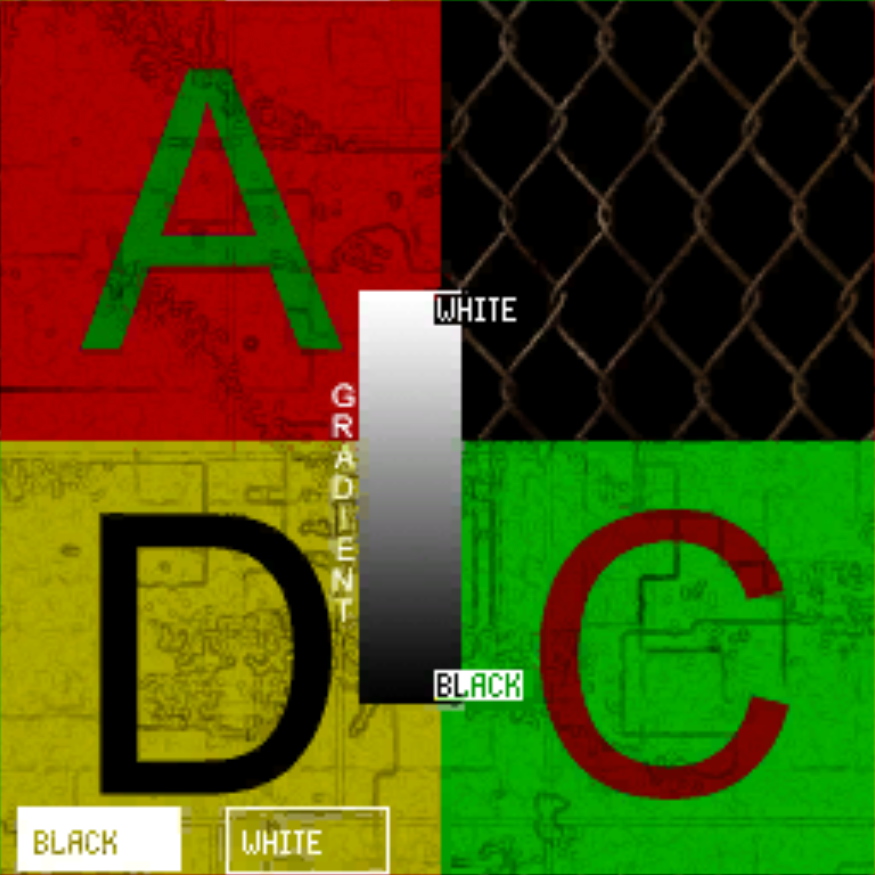 |
| models\transparent | transparency |  |
| models\water | ||
| models\water_ryaska | ||
| models\weapons | CubeMap reflection shader (variant 4) | 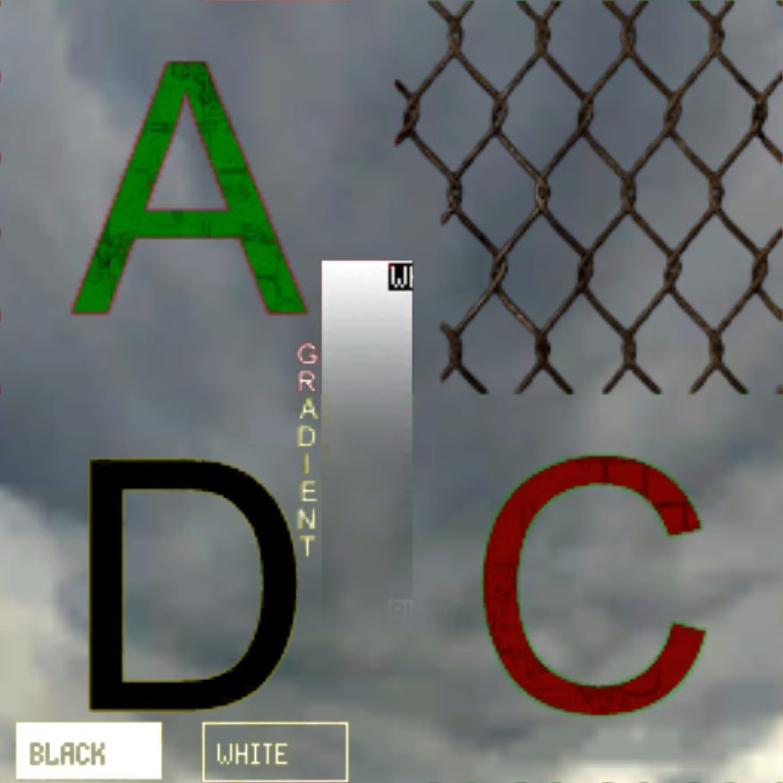 |
| models\window | semi-transparent shader with CubeMap reflection | 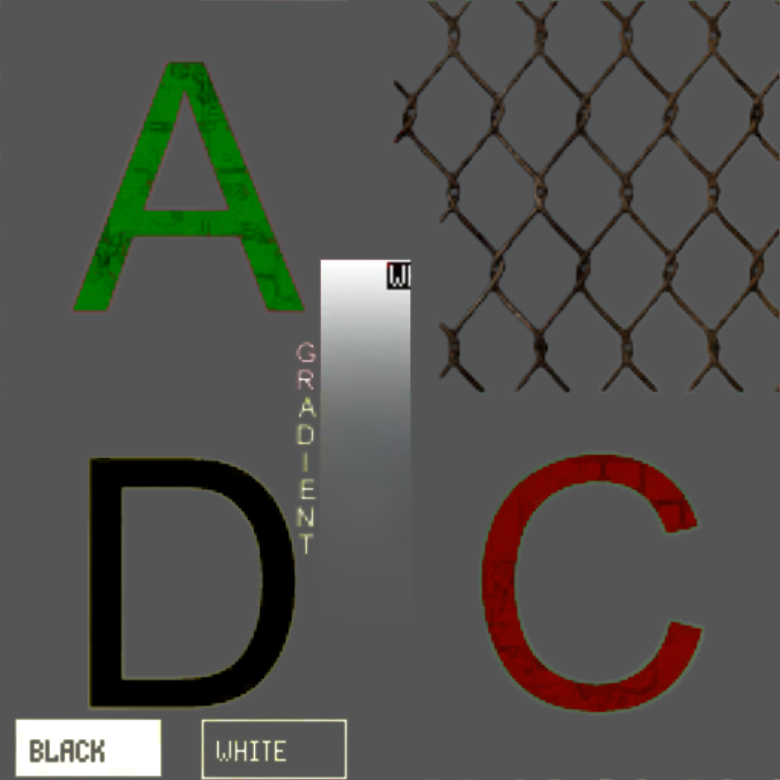 |
| models\xanomaly |  | |
| models\xdistor | ||
| models\xdistorcolor |  | |
| models\xdistorcolorl |  | |
| models\xdistorinv |  | |
| models\xmonolith |  | |
| models\xwindows |  |
Levels Shaders
| Shader name and path | Description |
|---|---|
| levels\agroprom_asfalt | terrain shader (asphalt) |
| levels\agroprom_grass | terrain shader (grass) |
| levels\agroprom_gravel | terrain shader (gravel) |
| levels\bar_asfalt | |
| levels\bar_asphalt | |
| levels\bar_grass | |
| levels\bar_gravel | |
| levels\darkcape_asfalt | |
| levels\darkcape_grass | |
| levels\darksc_asfalt | |
| levels\darksc_grass | |
| levels\darkvalley_asfalt | |
| levels\darkvalley_grass | |
| levels\darkvalley_sand | |
| levels\dead_city_asfalt | |
| levels\dead_city_grass | |
| levels\dead_city_ground | |
| levels\deadcity_asfalt | |
| levels\deadcity_earth | |
| levels\dead_city_grass | |
| levels\escape_asfalt | |
| levels\escape_asfalt_noblend | |
| levels\escape_grass | |
| levels\escape_sand | |
| levels\garbage_asfalt | |
| levels\garbage_earth | |
| levels\garbage_grass | |
| levels\generator_asfalt | |
| levels\generator_earth | |
| levels\generators_art | |
| levels\hospital_grass | |
| levels\hospital_sand | |
| levels\jupiter_asfalt | |
| levels\jupiter_earth | |
| levels\jupiter_grass | |
| levels\jupiter_plates | |
| levels\l01_escape_asfalt | |
| levels\l01_escape_asfalt_noblend | |
| levels\l01_escape_detritus | |
| levels\l01_escape_grass | |
| levels\l01_escape_sand | |
| levels\limansk_asfalt | |
| levels\limansk_earth | |
| levels\limansk_grass | |
| levels\maedow_asfalt | |
| levels\maedow_grass | |
| levels\maedow_sand | |
| levels\marsh_earth | |
| levels\military_asfalt | |
| levels\military_grass | |
| levels\military_sand | |
| levels\pripyat_asfalt | |
| levels\pripyat_earth | |
| levels\pripyat_gras2 | |
| levels\pripyat_grass | |
| levels\radar_asfalt | |
| levels\radar_grass | |
| levels\red_forest_asfalt | |
| levels\red_forest_earth | |
| levels\red_forest_grass | |
| levels\red_forest_leaves | |
| levels\red_forest_sand | |
| levels\stancia | |
| levels\stancia_asfalt | |
| levels\stancia_build_kanal | |
| levels\stancia_kanal | |
| levels\truckscemetery | |
| levels\truckscemetery_asfalt | |
| levels\truckscemetery_grass | |
| levels\yantar_asfalt | |
| levels\yantar_earth | |
| levels\zaton_asfalt | |
| levels\zaton_cracked | |
| levels\zaton_earth | |
| levels\zaton_earth_2 | |
| levels\zaton_grass | |
| levels\zaton_pebbles | |
| levels\zaton_plates | |
| levels\zaton_sand |
HUD Shaders
| Shader name and path | Description |
|---|---|
| hud\add | |
| hud\add-alpha | |
| hud\cursor | |
| hud\default | |
| hud\fog_of_war | |
| hud\hitmarker | |
| hud\p3d | |
| hud\set | |
| hud\seta |
Flora Shaders
| Shader name and path | Description |
|---|---|
| flora\leaf_wave | |
| flora\trunk_wave |
Effects Shaders
| Shader name and path | Description |
|---|---|
| effects\bullet_tracer | |
| effects\flame | |
| effects\flare | |
| effects\fx_refl_pod | |
| effects\glow | |
| effects\lightning | |
| effects\lightplanes | |
| effects\moon | |
| effects\rain | |
| effects\screen_add | |
| effects\screen_blend | |
| effects\screen_noise | |
| effects\screen_set | |
| effects\shadow | |
| effects\shadow_blur | |
| effects\shadow_world | |
| effects\sun | |
| effects\wallmark | |
| effects\wallmarkblend | |
| effects\wallmarkmult | |
| effects\wallmarkset | |
| effects\water | pure water shader |
| effects\waterryaska | crayfish shader |
| effects\waterstuden | swamp shader |
| effects\watertest | |
| effects\watertest-1 |
SDK Shaders
| Shader name and path | Description |
|---|---|
| editor\ai_node | |
| editor\do_base | |
| editor\selection | |
| editor\spawn_icon | |
| editor\wire |
Details Shaders
| Shader name and path | Description | Preview |
|---|---|---|
| details\blend | 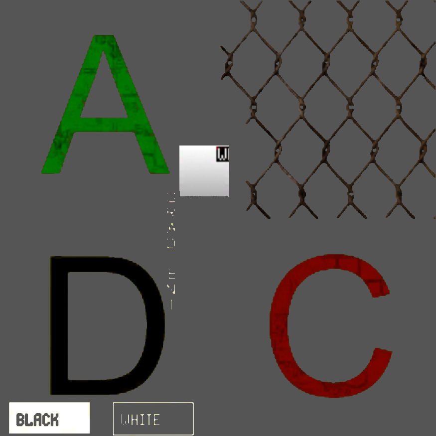 | |
| details\lod | ||
| details\set |
Def_Shaders
| Shader name and path | Description | Preview |
|---|---|---|
| def_shaders\def_add | 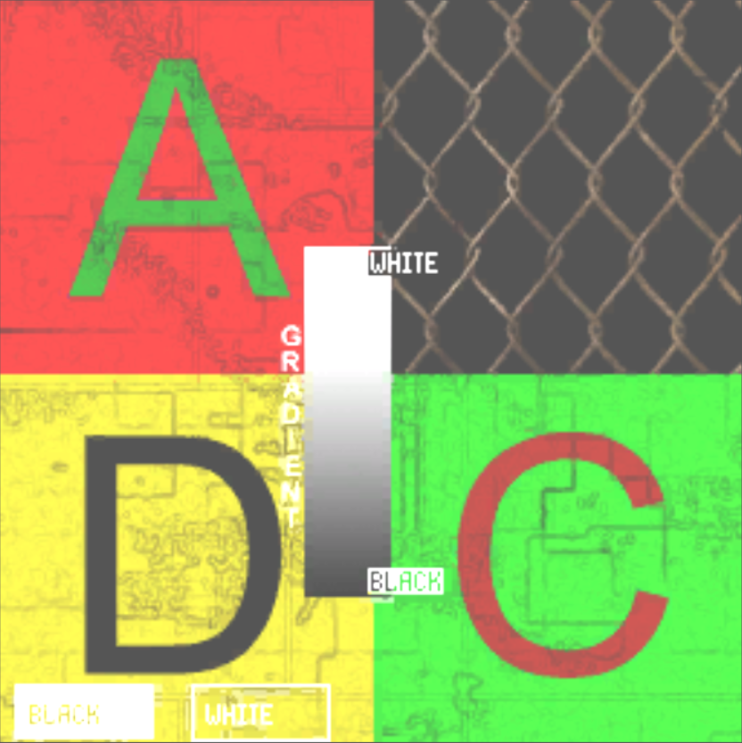 | |
| def_shaders\def_aref | 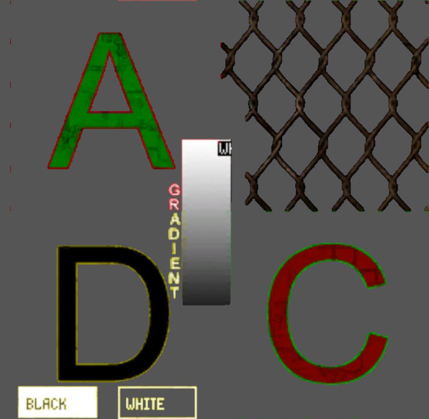 | |
| def_shaders\def_aref_v | 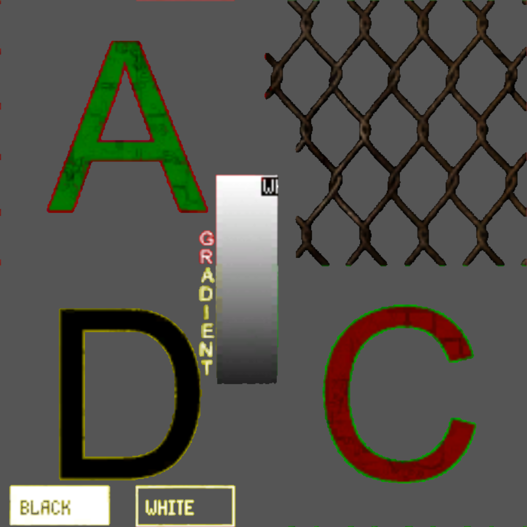 | |
| def_shaders\def_objects_lod | 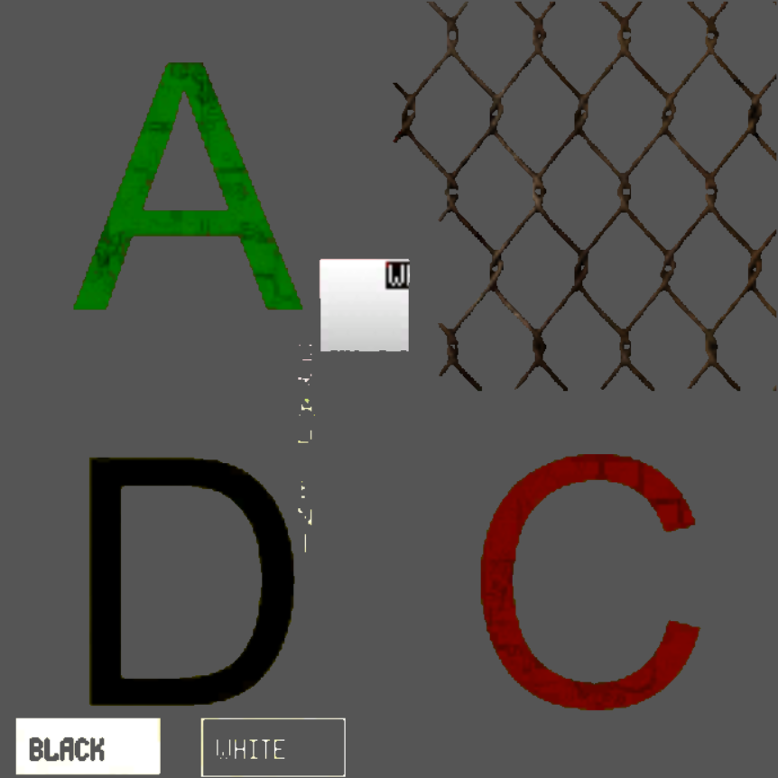 | |
| def_shaders\def_objects_lod_trans | 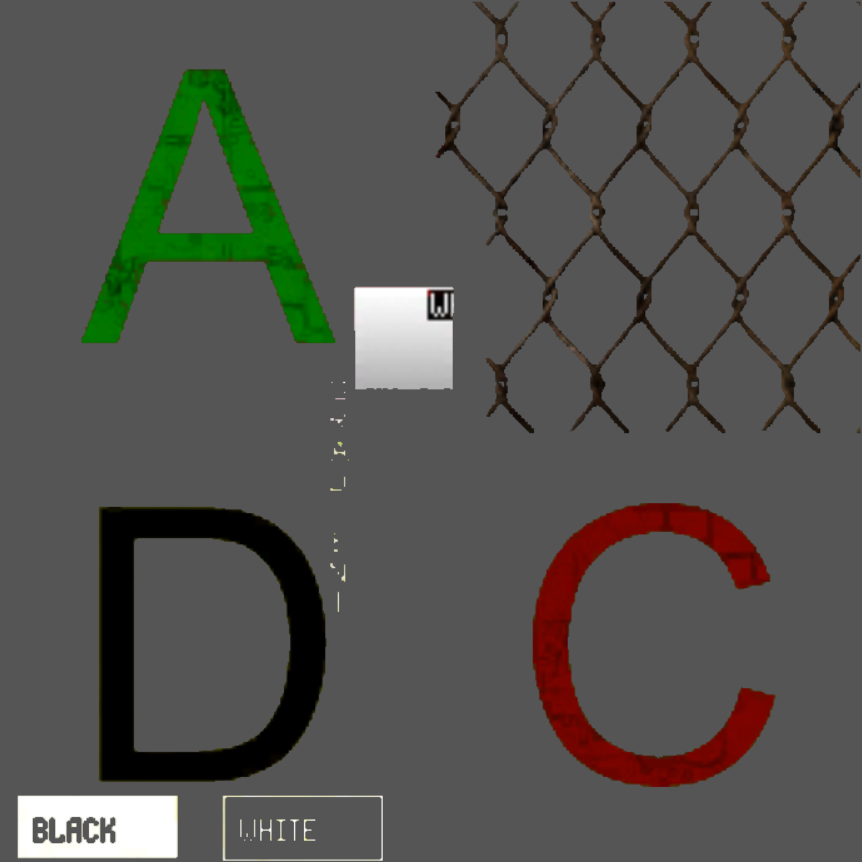 | |
| def_shaders\def_refl_alpha | 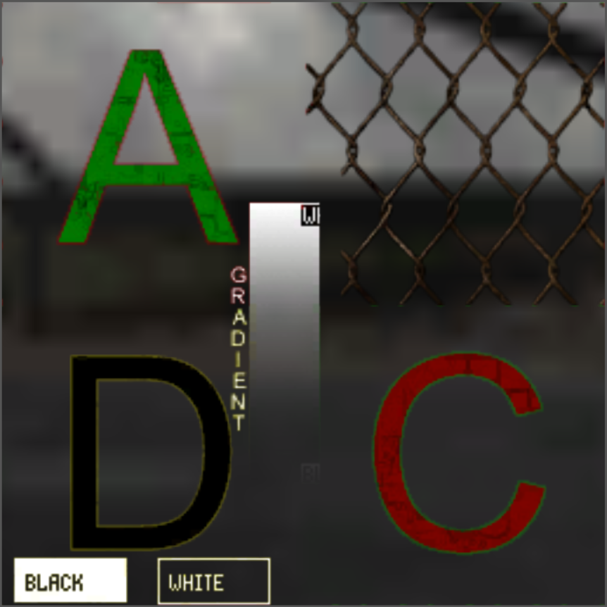 | |
| def_shaders\def_refl_alpha_heli |  | |
| def_shaders\def_refl_trans | 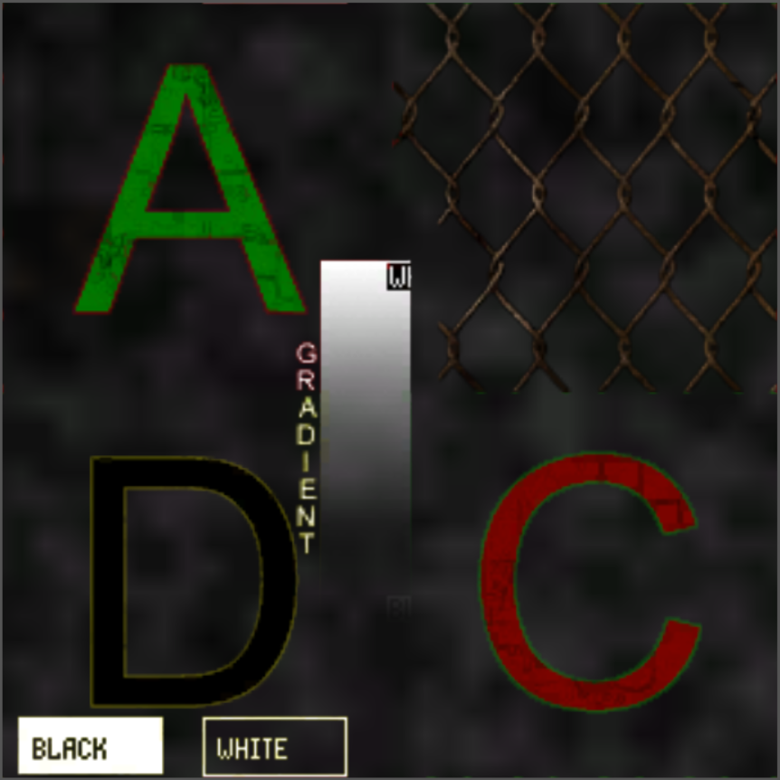 | |
| def_shaders\def_trans | 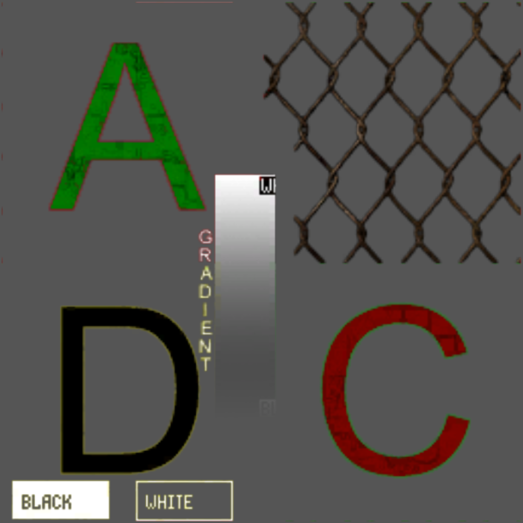 | |
| def_shaders\def_trans_v |  | |
| def_shaders\def_trans_v_tuchi | 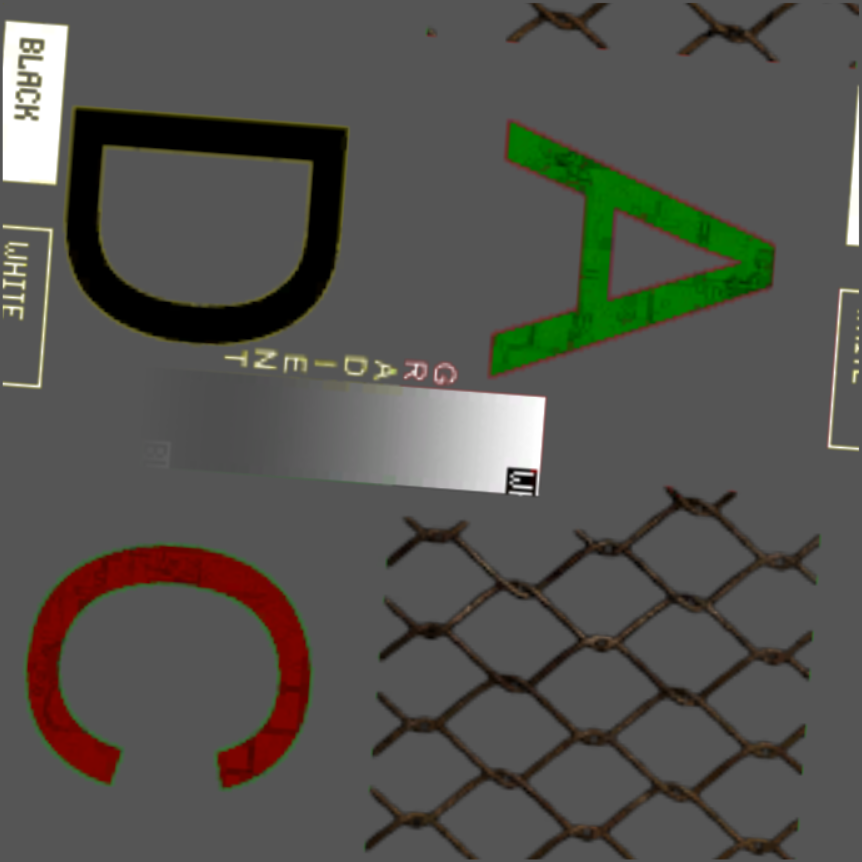 | |
| def_shaders\def_vertex | 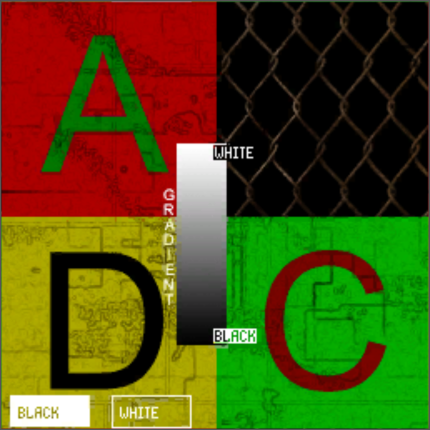 | |
| def_shaders\def_vertex_hm | ||
| def_shaders\def_vertex_pn | ||
| def_shaders\def_vertex_pn_hm | ||
| def_shaders\lod | 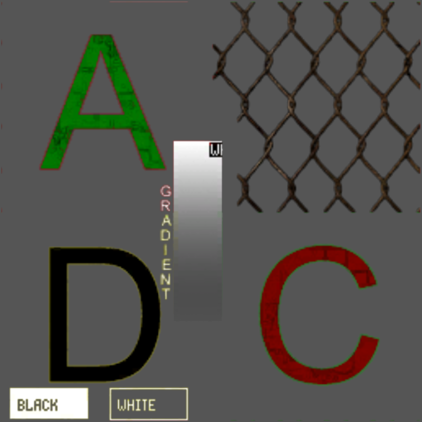 | |
| def_shaders\lod_old |
Debug Shaders
| Shader name and path | Description |
|---|---|
| debug\ai_nodes | |
| debug\wireframe |